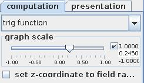

GRAPH 3D
The graph 3D module creates a three-dimensional graph of a regular 2D field. The color and height of the graph are determined independently by selectable input data components at that node.
Input data
The input field is regular 2D with affine geometry or is an image object.
Output data
The output field is regular 2D 3-space with affine geometry. A geometry object of the field.
Computation parameters

The graph component drop down list selects the component of the input field do be mapped to the height of the graph. By default the first component is be used.
Left mouse dragging at the graph scale slider scales the input height value. If check box on right hand side is on the user can change minimum, maximum and current value typing the values into the text fields.
If set Z coord to data range check box is off the z-axis does not describe the values of the functions. By default this option is on.
Presentation parameters
Presentation tab contents are described in the common interfaces section unter the Presentation Panel entry.